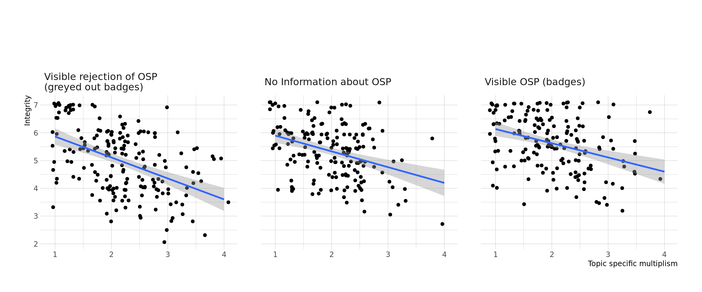

Open Science Badges foster lay people’s trust in scientists
(Re)Building trust?
Jürgen Schneider 1, 
@artzyatfailing2
juergen.schneider@uni-tuebingen.de
Samuel Merk1,
Tom Rosman2,
1 University of Tübingen
2 Leibniz Institute for Psychology Information
Introduction
Trust in science and scientists is generally high, but drops when learning about challenges in replication (Hendriks et al., 2020). Approaches to outline ‘open reforms’ in science on a general level do not seem to rebuild trust in science (Anvari & Lakens, 2019; Wingen et al., 2019). We thus shift the focus to concrete applications of open science practices (OSP) in journal articles such as open practice badges. As their effect may interact with epistemic beliefs (Hofer & Pintrich, 1997), we further will investigate their role in this context.
Research Questions
- Does the visibility of OSP influence perceived trustworthiness in scientists?
- Is there a relationship between multiplistic epistemic beliefs and the perceived trustworthiness in scientists?
- Do multiplistic epistemic beliefs moderate the effect of [1.]?
- Does the visibility of OSP influence multiplistic epistemic beliefs?
Preregistration: osf.io/ybs7f
Methods
Sample: 270 student teachers
Design:
- Stimuli: title pages of artificial journal article research reports
- Conditions:
- visOSP: author engaged in OSP, visible through badges
- nonOSP: author did not engage in OSP, visible through badges
- nonvis: no information about engagement in OSP, no badges
- randomized assignment to two of the conditions

Figure 1: Stimuli of condition visOSP
Measures:
- Laypeople’s Trust in Experts (Hendriks et al., 2015)
- Topic specific multiplistic epistemic beliefs (Merk et al., 2017)
- Topic specific treatment check
Questionnaire: rbt-demo.formr.org
Results
H1: \(\mu_{nonOSP}=\mu_{nonvis}=\mu_{visOSP}\)
H2: \(\mu_{nonOSP}<\mu_{nonvis}<\mu_{visOSP}\)
H3: \(\mu_{nonOSP}<\mu_{nonvis}=\mu_{visOSP}\)
Highest posterior probability for H2.
\(BF_{21}= 5.24\cdot10^7\); \(BF_{23}= 5.60\cdot10^1\)
Figure 2: Trustworthiness subscales by treatment. Violinplots and means ± 1*SD
H1: \(r_{mult-trust}<0\)
H2: \(r_{mult-trust}=0\)
Highest posterior probability for H1.
\(BF_{12}= 1.17\cdot10^{21}\)
H1: \(r_{(mult-trust)nonOSP}<r_{(mult-trust)nonvis}<r_{(mult-trust)visOSP}\)
H2: \((r_{(mult-trust)nonOSP}, r_{(mult-trust)nonvis})<r_{(mult-trust)visOSP}\)
H3: \(r_{(mult-trust)nonOSP}=r_{(mult-trust)nonvis}=r_{(mult-trust)visOSP}\)
Highest posterior probability for H3.
\(BF_{31}= 13.76\); \(BF_{32}= 17.38\)

Figure 3: Multiplistic epistemic beliefs with integrity per treatment.
H1: \(\mu_{nonOSP}=\mu_{nonvis}=\mu_{visOSP}\)
H2: \(\mu_{nonOSP}>\mu_{nonvis}>\mu_{visOSP}\)
H3: \((\mu_{nonOSP},\mu_{nonvis})>\mu_{visOSP}\)
\(BF_{21}= 7.32\); \(BF_{23}= 1.85\)
Figure 4: Treatment on multiplistic epistemic beliefs. Violinplots and means ± 1*SD
References
Anvari, F., & Lakens, D. (2019). The Replicability Crisis and Public Trust in Psychological Science [Preprint]. PsyArXiv. https://doi.org/10.31234/osf.io/vtmpc
Hendriks, F., Kienhues, D., & Bromme, R. (2020). Replication crisis = trust crisis? The effect of successful vs failed replications on laypeople’s trust in researchers and research. Public Understanding of Science, 0963662520902383. https://doi.org/10.1177/0963662520902383
Hendriks, F., Kienhues, D., & Bromme, R. (2015). Measuring Laypeople’s Trust in Experts in a Digital Age: The Muenster Epistemic Trustworthiness Inventory (METI). PLOS ONE, 10(10). https://doi.org/10.1371/journal.pone.0139309
Hofer, B. K., & Pintrich, P. R. (1997). The Development of Epistemological Theories: Beliefs About Knowledge and Knowing and Their Relation to Learning. Review of Educational Research, 67(1), 88–140. https://doi.org/10.3102/00346543067001088
Merk, S., Kelava, A., Schneider, J., Syring, M., & Bohl, T. (2017). Epistemologische Überzeugungen von Lehramtsstudierenden bezüglich pädagogischen Wissens: Gegenstands-, Quellen- und Kontextspezifität. Journal for Educational Research Online, 9(1), 169–189.
Wingen, T., Berkessel, J., & Englich, B. (2019). No Replication, no Trust? How Low Replicability Influences Trust in Psychology [Preprint]. Open Science Framework. https://doi.org/10.31219/osf.io/4ukq5